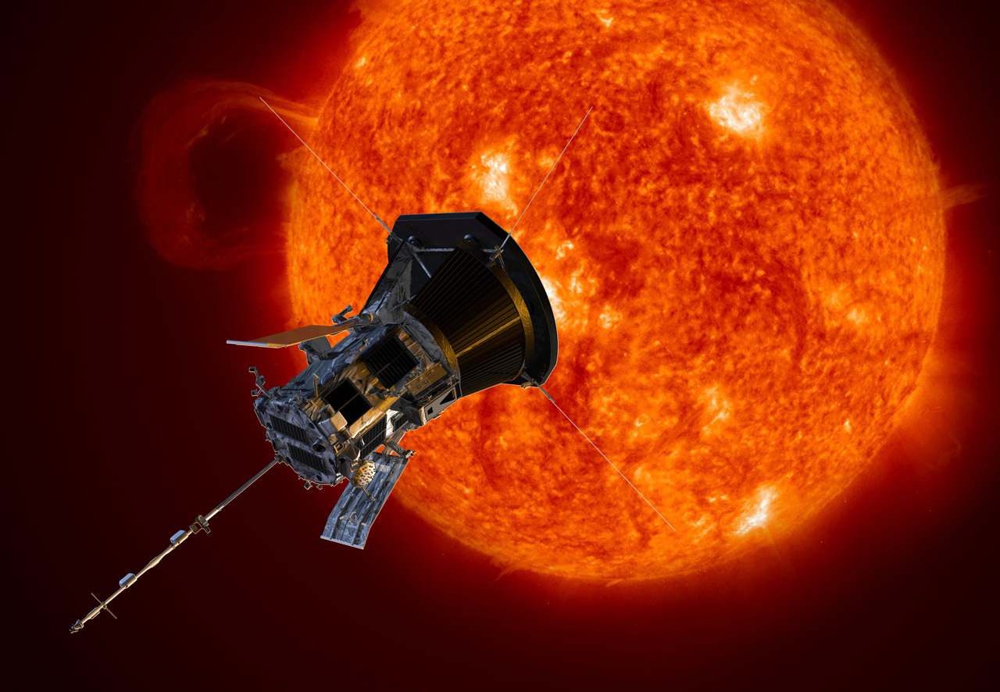

Exploring the Sun
Two active missions by Nasa and their details
Parker Solar Probe
NASA's Parker Solar Probe is on a mission to "touch the Sun." The spacecraft is flying closer to the Sun’s surface than any spacecraft before it. The mission will revolutionize our understanding of the Sun. Parker will fly more than seven times closer to the Sun than any spacecraft. Over seven years, the spacecraft will complete 24 orbits around the Sun. At its closest approach, the spacecraft will come within about 3.9 million miles (6.2 million kilometers) of the Sun.
SOHO
SOHO is the longest-lived Sun-watching satellite to date. Numerous mission extensions have enabled the spacecraft to observe two 11-year solar cycles and to discover thousands of comets. SOHO is a cooperative international project between ESA and NASA. NASA contributed three instruments and launch services. ESA leads the mission. During its pioneering career, SOHO has returned a wealth of new information about the Sun—from its core to its outer atmosphere and the solar wind. SOHO monitors the effects of space weather on our planet, and it plays a vital role in forecasting potentially dangerous solar storms. SOHO is the most prolific discoverer of comets in astronomical history, with more than 3,000 tracked during encounters with the Sun.